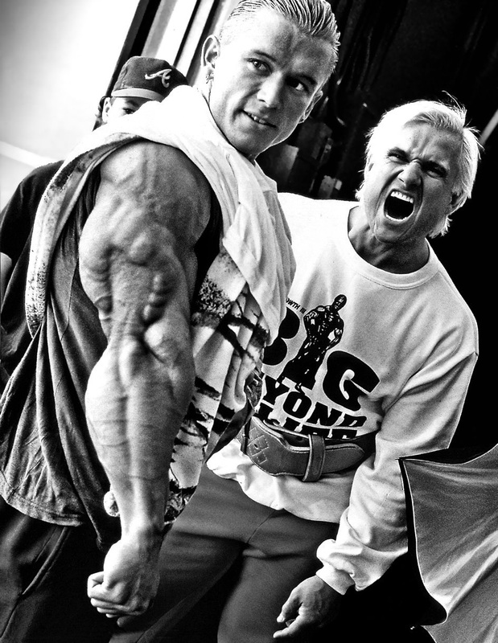

Lee Priest è nato il 6 luglio 1972 a Newcastle, Australia. Cresciuto in una famiglia di appassionati di bodybuilding, è stato introdotto a questo sport fin da giovane. Sua madre, un'atleta di bodybuilding amatoriale, è stata una delle sue principali ispirazioni e influenze. Lee iniziò ad allenarsi con i pesi all'età di 12 anni e, grazie alla sua determinazione e alla sua genetica favorevole, ottenne rapidamente risultati impressionanti. A 17 anni, Priest vinse il suo primo titolo importante, il Mr. Australia, che gli aprì le porte a una carriera professionale precoce e di grande successo.
La carriera agonistica di Lee Priest è iniziata in modo fulminante. Dopo aver vinto il titolo di Mr. Australia per tre anni consecutivi, è diventato professionista all'età di 20 anni, uno dei più giovani nella storia del bodybuilding. Priest ha partecipato a numerose competizioni internazionali, tra cui il Mr. Olympia, l'Arnold Classic e il Grand Prix di vari paesi. Nonostante la sua statura relativamente bassa (1,63 metri), Priest è noto per la sua massa muscolare densa e ben definita, che gli ha permesso di competere con successo contro avversari più grandi. Ha ottenuto piazzamenti di rilievo, inclusi diversi top 10 al Mr. Olympia e vittorie in competizioni come il San Francisco Pro Invitational nel 2002.
La filosofia di bodybuilding di Lee Priest si basa su una combinazione di dedizione, consistenza e passione. Priest è noto per il suo approccio schietto e realistico al bodybuilding, spesso sottolineando l'importanza di allenarsi duramente e di mantenere una dieta rigorosa ma sostenibile. Crede che il bodybuilding debba essere divertente e gratificante, e non una fonte di stress o ossessione. Priest enfatizza anche l'importanza dell'individualità, sostenendo che ogni atleta deve trovare ciò che funziona meglio per il proprio corpo in termini di allenamento e nutrizione. La sua filosofia è caratterizzata da un equilibrio tra allenamenti intensi e una vita fuori dalla palestra che consenta di mantenere una salute mentale positiva.
Il metodo di allenamento di Lee Priest è noto per la sua intensità e varietà. Priest preferisce un approccio ad alto volume, allenando ogni gruppo muscolare con molte serie e ripetizioni per stimolare la massima crescita muscolare. La sua routine di allenamento comprende una combinazione di esercizi composti e di isolamento, con un'enfasi particolare sulla forma corretta e il controllo del peso. Priest spesso varia i suoi allenamenti per evitare la stagnazione, incorporando tecniche avanzate come superserie, drop set e ripetizioni forzate. Inoltre, dedica un'attenzione particolare alla nutrizione, seguendo una dieta ricca di proteine, carboidrati complessi e grassi sani per supportare il suo regime di allenamento intenso. In sintesi, Lee Priest è una figura iconica nel mondo del bodybuilding, noto per la sua carriera sportiva impressionante, la sua filosofia di allenamento equilibrata e il suo metodo di allenamento ad alta intensità. La sua dedizione al bodybuilding e il suo approccio realistico e appassionato lo hanno reso un esempio per molti atleti e appassionati, ispirando generazioni di bodybuilder in tutto il mondo.